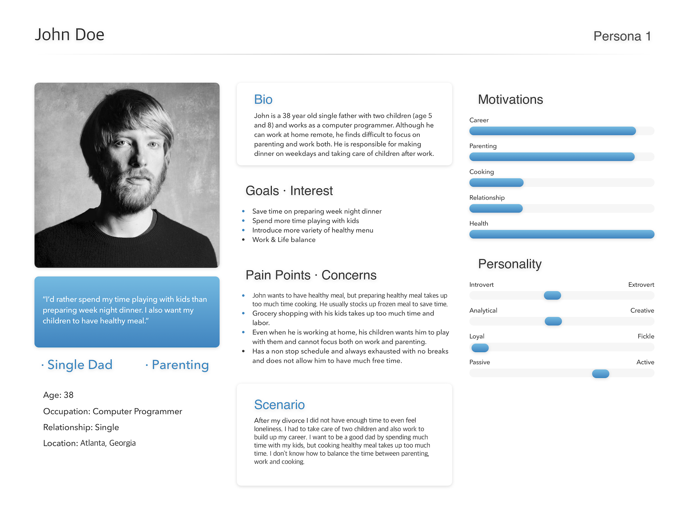
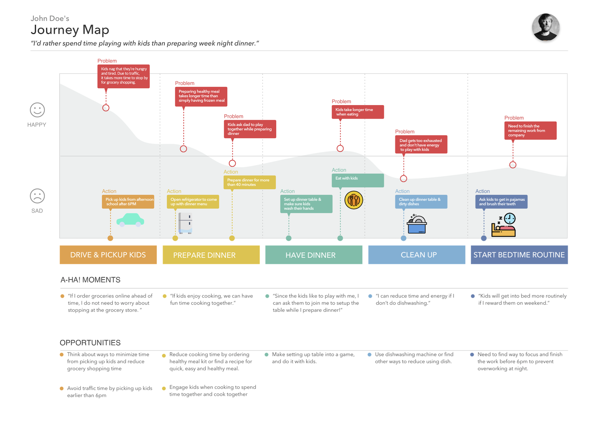

Understanding the COVID-19 Effect on Bakery Shopping Behavior
Photo by ccacca bakery in ATL
Photo by ccacca bakery in ATL
At Glance
Length: 2 months
Tool: Sketch
Role: Researching, Designing, Prototying
Background
Due to recent public health concerns regarding the COVID-19 virus, brick-and-mortar bakeries are facing difficult times recovering from lost sales. To help bakery owners reorient their business and transition from physical to an online only store front, I conducted preliminary research to understand customers needs when it comes to purchasing baked goods through an online process.
Goal
The goal of this project is to undertand customers needs who purchase baked goods through an online process and design an online store front for an online bakery shop.
Methods
- Mindmapping
- Online Survey & Interview
- Storyboarding
- Persona
- User Journey
- Competitive Analysis
- Prototying
- Evaluation
To find needs and satiate the bakery customers and also bakery business owners, I interviewed more than 30 people who have regularly purchased baked goods from local business and live in metro Atlanta area. In addition, thorough interviews were conducted as needed with client.
Identifying User Needs
After talking to people in the potential target population, I discovered many interesting findings that can be translated into design insights. I summarized these findings below.
- Rather than spending quality time with children, more time was unncessarily spent with grocery shopping, house cleaning
- It is hard to focus on both parenting and working
- Don't have enough time to take care of myself
Persona
I gathered and synthesized data from the interview and online forum posts and clustered the notes via an affinity diagramming activity. The analysis served as guidance to construct a persona, which is a fictional representation of a potential type of user that drives the product design. A typical persona includes a short profile description of the user, their goals, key characteristic attributes, and demographic characteristics such as internet usage.

{kind=link}
User Journey
In addition to the persona, I also created a user journey map that best reflects the persona's activities and level of affective experience in relation to the respective time of day and goals.

{kind=link}
Ideation & Prototype
I started prototying ideas inspired by interviewees. Single dads have difficulty managing time between spending time with children and also doing housechores. To mitigate this problem, I made prototype named superkiddos. Single dads can make a family account and utilize this application for his children to have more responsibility in helping house chores and be rewarded. That way, single dads can reduce the stress of housechores and manage the housechore more organized and effectively.
Parent View
Child View
{kind=link}
{kind=link}
{kind=link}
{kind=link}
{kind=link}
{kind=link}
{kind=link}
{kind=link}